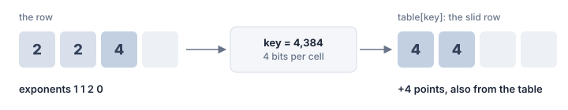
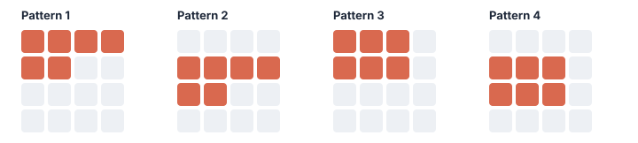
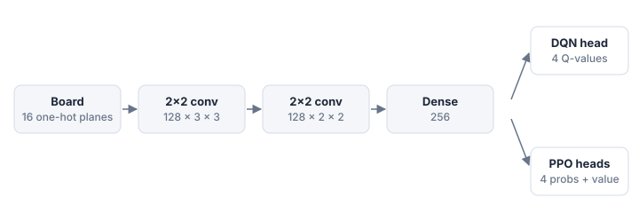
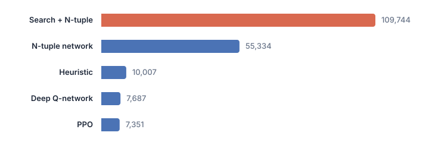
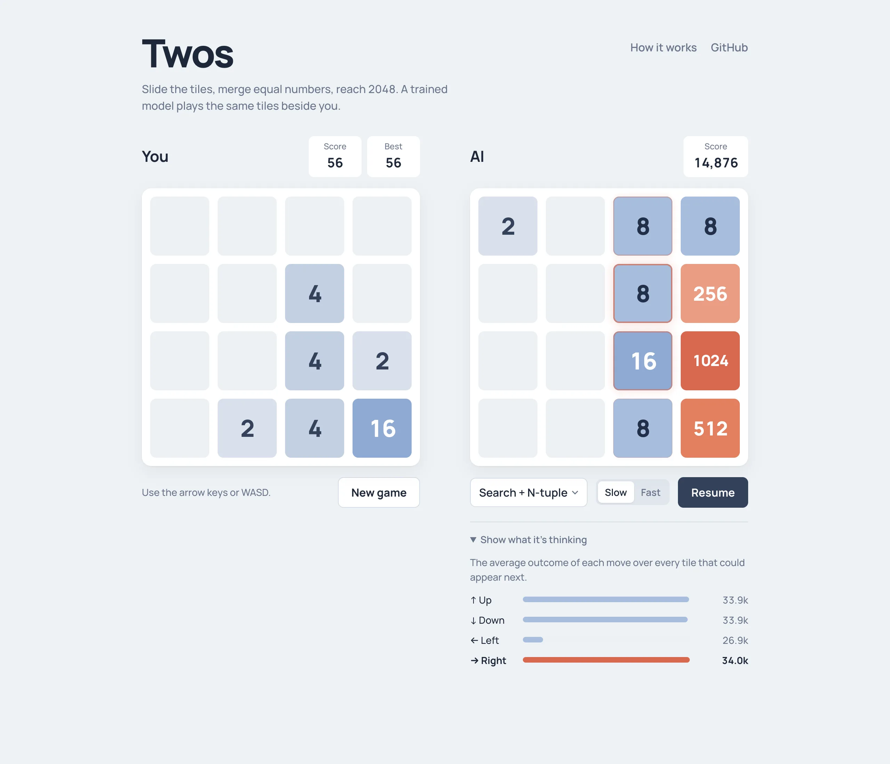
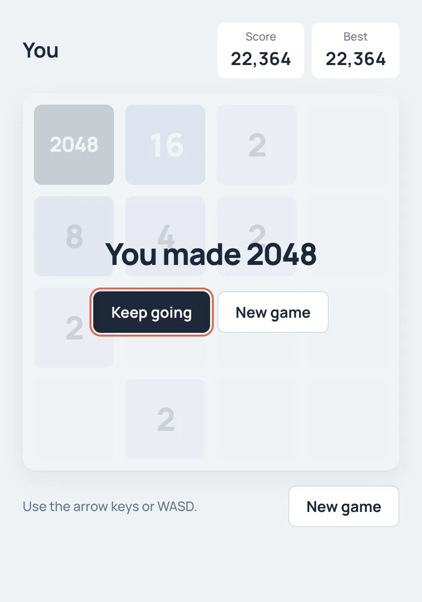
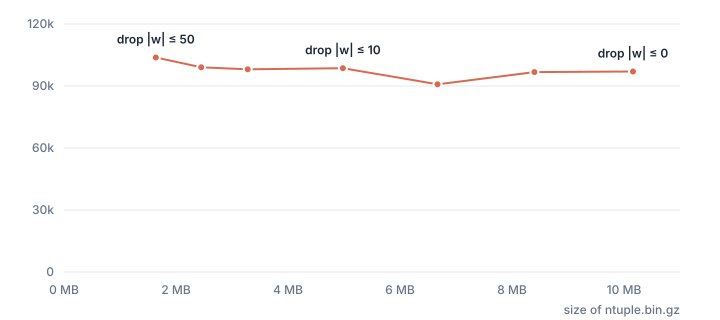
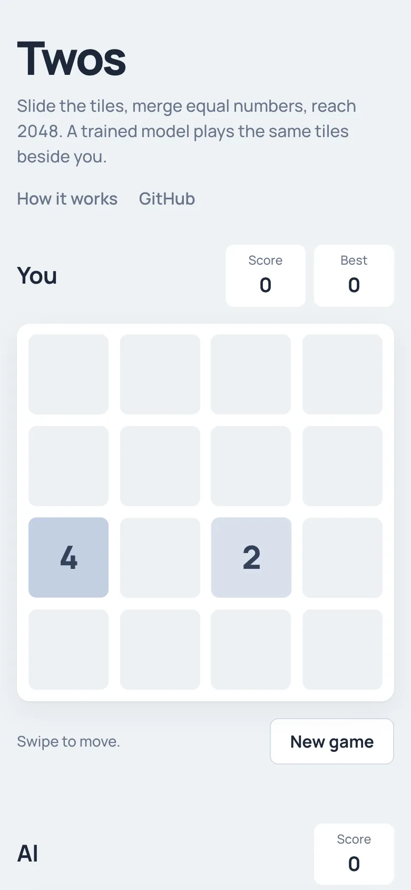

How I* built Twos
A game of 2048 with a trained model playing the same tiles beside you. This is the path from one question about search versus learning to five models running in your browser, including the version I threw away.
*and Claude
It started in 15-112
In the fall of 2025 I took 15-112, Carnegie Mellon's introductory programming course, with Professor David Kosbie. This was a paradigm changing class for me, which culminated in a term project where we coded a game from scratch (no AI).
Watching Code Bullet beat it
Around the same time I watched Code Bullet's AI learns to play 2048. He builds the game from scratch and then an AI that plays it, and his project describes the approach as a look-ahead algorithm in which you try the moves, see where they lead, pick the best.
His AI searches, whereas most of the reinforcement learning I had read about learns from experience instead, playing thousands of games and slowly getting better. I wanted to see which one actually works better on a game like this. And could you combine them?
The rules are trickier than they look
2048 looks simple until you write it down. A tile can only merge once per move, so a row of
2 2 2 2 slides left to 4 4, not 8. A row of 2 2 4
becomes 4 4, because the new 4 doesn't get to merge again. When three equal tiles line up,
the pair nearest the wall merges first. A move that changes nothing doesn't count, and no new tile
appears. I wrote each of those as a unit test before writing the code that passes it, which is the
most 112 thing in this whole project.
For speed I store each tile as its exponent (2 is 1, 4 is 2, 2048 is 11), which fits in four bits. A row of four tiles then packs into a 16-bit number, and there are only 65,536 possible rows, so I solve every one of them once when the program starts. After that, every move in every direction is a flip or transpose of the board plus four lookups. One game runs at about 23,000 moves a second in Python, and the neural networks later trained on batches of 32 to 64 games at once.

Implementing my strategy
The way most people learn to play 2048 (and the way I played during boring high-school classes) is to pick a corner, park the biggest tile there, and keep a descending chain behind it so merges keep cascading toward the corner. I turned that into a heuristic: a score for any board that rewards big tiles near the corner along a snake-shaped path, empty cells, and neighboring tiles that can merge, and penalizes big jumps between neighbors. The player looks one move ahead and picks whichever move leads to the best-scoring board.
It turned out that by random moves alone you can achieve an average score of about 1,000 points. The heuristic approach averages 10,007 and reaches 2048 in 7% of games.
Five ways to play
Every approach plays the same game, framed the same way: a Markov decision process. The state is the board, the action is one of four moves, and the reward is the points from whatever merged. What separates them is how they decide which move to make.
1. The heuristic
Covered above: a score I designed by hand, and a one-move lookahead. It's in the lineup as the floor.
Nothing is learned here: every weight in the score is a number I picked and tuned by watching it play.
2. The N-tuple network, trained with temporal-difference learning
This is the approach most 2048 research builds on, from Yeh et al. (2016). Instead of a neural network, it scores a board by looking at a few small groups of cells and adding up numbers from a lookup table for each group. Training is just adjusting those numbers.

It scores the board right after my move, before the random new tile appears, which takes some of the luck out of what it has to learn.
It learns with temporal-difference learning: after each move, it nudges its score for the old board toward what actually happened next.
It learned fast. In a 60-minute run it played 55,022 games against itself, and the share of its recent games reaching 2048 went from zero to 90%.

3. The deep Q-network
Deep Q-learning is the method made famous for learning Atari games. A neural network looks at the board and estimates how many points each of the four moves will lead to, then picks the highest.

It trains by playing lots of games at once, saving recent moves, and learning from them in batches. It skips illegal moves, and it shrinks big rewards so late-game merges don't throw the training off.
The first version trained very slowly. Rewriting one piece of the network's math in an equivalent but faster way made training about 7× faster.

After 30 minutes and about 15,500 games, it averaged 7,687 in the benchmark and reached 2048 in 3% of games. Below my heuristic.
4. PPO
Proximal policy optimization learns which move to make directly, as a probability for each move, along with a guess at how good the position is. It plays a batch of games, learns from them, and repeats.
Like the DQN, it ignores illegal moves, which mattered a lot late in games when only one or two moves are possible.
After 30 minutes and about 52,700 games, it averaged 7,351 and never reached 2048. Also below my heuristic.
5. Search on top of learning
This is where Code Bullet's idea came back. Expectimax search looks a move or two ahead, like his AI did, and averages over where the next random tile could land. Instead of searching all the way to the end of the game, it stops and asks the N-tuple network how good the board looks.

It looks further ahead when the board is crowded, since that's when a mistake costs the most.
It doesn't learn anything new on its own. It just combines what the N-tuple network learned with a little lookahead.
How they compare

The neural networks got half the training time, so this isn't a perfectly fair comparison. But the N-tuple network was still improving at the hour mark, while the neural networks had leveled off.

So the answer to the question Code Bullet left me with: search and learning are better together. Learning alone scored five and a half times my heuristic, and adding a shallow search on top doubled that again.
Version two: a game first

One detail I'm proud of: both boards draw their new tiles from the same seeded random sequence. You and the model get the same luck, as far as two different games allow, so the comparison means something. Press New game and both boards restart from one new seed. And when the model finishes, Run again replays the exact same tiles, which makes switching models a fair head-to-head.


For the glow, each model explains itself in its own terms. For the N-tuple models, every active table weight is spread over the tiles its pattern covers. For the neural networks I use occlusion: take one tile away, run the network again, and see how much its answer moves.
Running every model in your browser
Version one needed a Python server for every move. Version two has no server at all. I trained the models in Python, exported their weights to small files, and rewrote the game and all five players in plain JavaScript that runs in a background thread (a web worker), so the animations never stutter while the search is thinking.
Fitting the model through a phone connection
The full N-tuple tables would be 268 MB. Training only ever touches a fraction of the entries, so I ship just those: sorted keys stored as the gaps between them, which compress well, and weights stored as 16-bit integers with one scale per table. That still left 10 MB. So I ran a sweep, dropping every weight below a threshold and measuring the search at each step. The answer surprised me: weights under 50 points are close to noise. Dropping them cut the file to 1.6 MB with no measurable loss in strength.


What's next
The N-tuple network was still improving when I stopped it, so the obvious next step is to train longer, and to try the multi-stage version from the Yeh paper, which uses separate tables for the early and late game. I'd also like to give the neural networks a fair rematch with equal training time and a few upgrades, like multi-step returns, and see how close they can get. And if a deeper search can stay fast enough in the browser, I want to know how often it reaches 8192.